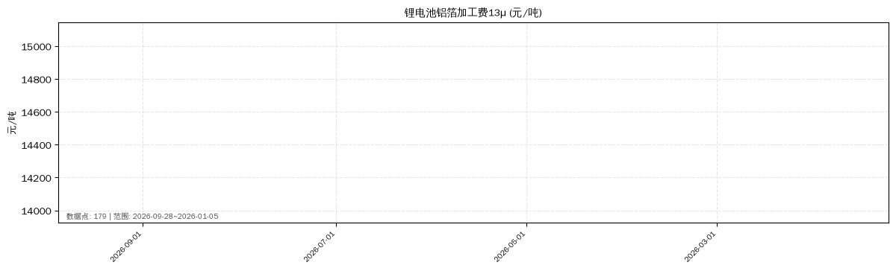
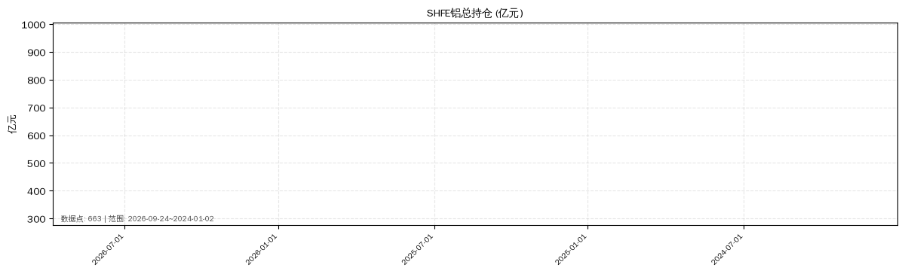
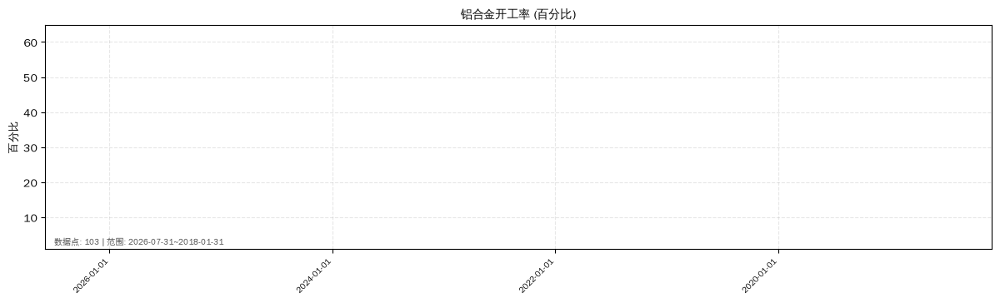
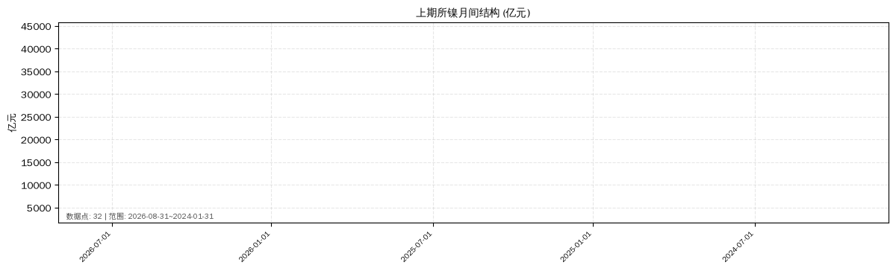
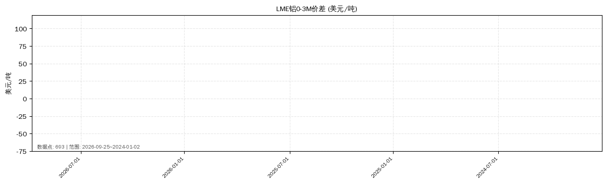
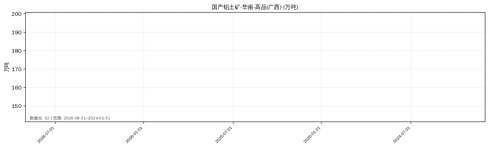
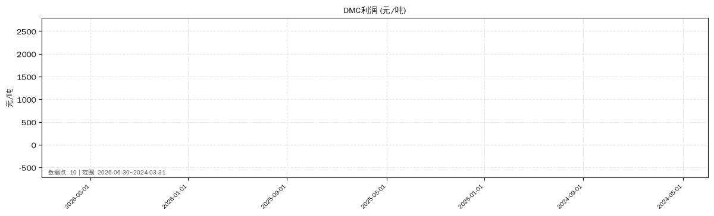
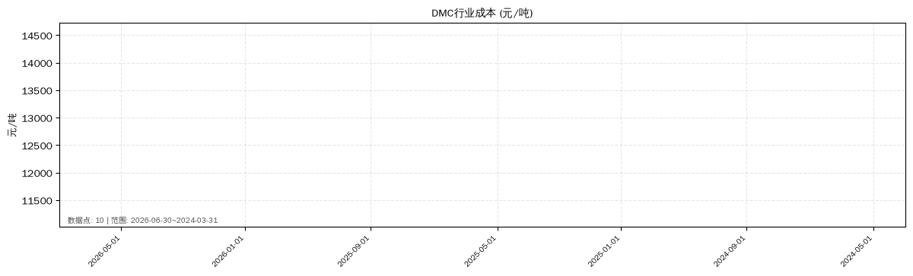
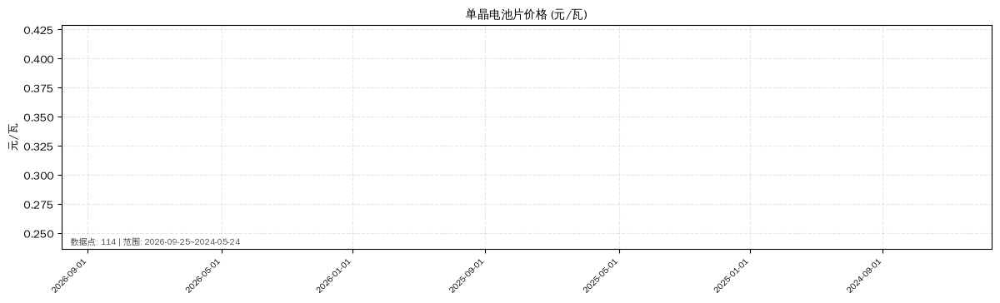

1. 复核概览
看板总行
32
放行
16
拦截
11
弃权
5
拉取成功
16
渲染成功
15
冗余废弃
3
单位冲突
1
单位已换算
1
unified_warning 命中
5
REVIEW_SKIP 保留
32/32
数据源下线(红)
32
人工结论留白
32/32
✅ 最终核验归档版（v3）。已修复交接文档 §6 三个核心坑：
① idx 非全局唯一（32 行仅 18 个不同 idx，9 组重复）→ 改用
② 3 组同 zhiji_id 重复行（ID01370137 / ID01464612 / ID01464616）→ 图表速览黄色 同ID重复行 标签标注，冗余与否由人工确认。
③ 上游 DSHB 溯源 → 6 个核心产物 MD5 与交接文档声明值 6/6 一致，链路完整（详见
① idx 非全局唯一（32 行仅 18 个不同 idx，9 组重复）→ 改用
行号 L1–L32 作唯一主键，idx 列保留橙色 ! 警示，锚点/告警直达/CSV 导出全部基于行号。② 3 组同 zhiji_id 重复行（ID01370137 / ID01464612 / ID01464616）→ 图表速览黄色 同ID重复行 标签标注，冗余与否由人工确认。
③ 上游 DSHB 溯源 → 6 个核心产物 MD5 与交接文档声明值 6/6 一致，链路完整（详见
REVIEW_DASHBOARD_MD5.md §4）。
ℹ️ 范围说明（不阻断验收）：
li_21 锂 2.1 盘面结构页面标记为【NI/SN/SI/LI 待建页面，非本次交付物】，
属 STATUS.md 记载的五金属建页待办（ZN 29 页已完成，NI/SN/SI/LI 数据已拉、JSONL 已导、待建页）。
该页面不在本复核看板范围内，scripts/check_html.py 报 266/267 的唯一 FAIL 项即为此页面（本地未跟踪/缺失），
不影响本看板验收结论。另有 verify_render.js 因 /tmp/node_modules jsdom 依赖缺失未执行——
按工单约束不安装依赖、不改动 /tmp，标记为【环境低优先级运维问题，不阻塞评审】。
状态分布
正常(白)
27
稀疏(黄)
0
权限缺失(橙)
5
数据源下线(红)
0
着色口径：正常=白（默认无底色）｜稀疏=黄（data_status/unified_warning 含稀疏）｜权限缺失=橙（data_status=权限缺失）｜数据源下线=红（含停更/下线/stale）。
本版 32 行实际分布：正常 27 / 稀疏 0 / 权限缺失 5 / 下线 0。稀疏与下线两类在本轮 32 行看板内均为 0，原因是稀疏/停更的 3 个 zhiji_id（ID00259727、CM0000053686、a10166705）经 FP 抑制后未进入本看板集合，其告警已完整记入
本版 32 行实际分布：正常 27 / 稀疏 0 / 权限缺失 5 / 下线 0。稀疏与下线两类在本轮 32 行看板内均为 0，原因是稀疏/停更的 3 个 zhiji_id（ID00259727、CM0000053686、a10166705）经 FP 抑制后未进入本看板集合，其告警已完整记入
unified_warning_summary.md §2.2 不丢失。
2. 告警直达（5 条）
- 行7 · idx31 · DMC工厂库存 权限缺失(橙)行15 · idx31 · 锂矿 外采 厂内库存 权限缺失(橙)行16 · idx32 · 锂矿 外采 在途库存 权限缺失(橙)行24 · idx32 · DMC行业利润 权限缺失(橙)行25 · idx32 · 卖交割利润-主力利润 权限缺失(橙)
未进入看板但必须人工关注的 3 条（告警回填时判定不在 32 行看板集合，仅记入汇总）：
·
·
·
·
ID00259727 电解铝A00现货价 停更1446天[HIGH] + 单位不符[MEDIUM]·
CM0000053686 SEAISI东南亚钢铁出口 停更636天[HIGH] + 稀疏1条[MEDIUM]·
a10166705 SMM铝型材年产量 停更271天[MEDIUM] + 稀疏2条[MEDIUM]
3. 渲染图表速览（16 张）

ID01302428
正常(白) 664.0点 · 元/吨

FU00039493
正常(白) 663.0点 · 亿元

ID02069937
正常(白) 73.0点 · 万吨

ID00188132
正常(白) 32.0点 · 百分比
ID00188135
正常(白) 32.0点 · 百分比

RE00033560
正常(白) 32.0点 · 吨

ID02069945
权限缺失(橙) 18.0点 · 吨

ID02093014
权限缺失(橙) 19.0点 · 吨

FU00112687
正常(白) 32.0点 · 亿元

ID01244864
正常(白) 693.0点 · 美元/吨

ID01724127
正常(白) 32.0点 · 万吨

ID01370137 ['行22', '行24']
正常(白) 10.0点 · 元/吨
ID01370137 ['行22', '行24']
权限缺失(橙) 10.0点 · 元/吨

ID01370124
正常(白) 10.0点 · 元/吨

ID02048294
正常(白) 114.0点 · 元/瓦

ID01737992
正常(白) 668.0点 · 美元/湿吨
4. 全量 32 行复核表（48 个字段）
保留项：REVIEW_SKIP 列 32/32 行均为「是(禁自动ID绑定)」；人工结论(待填) 列 32/32 行留白，本版未自动绑定任何指标 ID。表格支持顶部搜索与状态筛选；表头鼠标悬停可看完整字段名。
⚠️ 行定位规则（务必遵守）：源看板
本表已新增
定位任一记录请用「行号 + 图表短名」二元组，切勿只凭 idx。
同 zhiji_id 重复行（图表速览中黄色标签标注）需人工确认是否冗余。
idx 列非全局唯一——本表已新增
行号（L1–L32）作为唯一定位键，idx 列后带橙色 ! 提示其不可单独使用。定位任一记录请用「行号 + 图表短名」二元组，切勿只凭 idx。
同 zhiji_id 重复行（图表速览中黄色标签标注）需人工确认是否冗余。
人工结论填写后自动存入浏览器 localStorage，可跨刷新保留；导出为纯文本 | 分隔格式。
| 锚点 | 状态 | 渲染图 | 行号 | idx | 图表短名(PDF) | 图表跳表品种 | 候选ID(v8_id) | 候选ID(p0_id) | 候选指标名 | 候选单位 | 候选源 | 候选路径 | 数据库 | 板块(L1) | 候选域标签 | 域判定依据 | V7原始 | P0分 | V8原始 | V9词表分(B) | P0联合分(C) | 域过滤判定 | 域过滤依据 | 域过滤后最终分 | 跨品种标记 | 硬约束 | 扣分明细 | 扣分字典 | 风险等级 | C联合chart_variety | C联合cand_variety | 备注(根因) | REVIEW_SKIP | 人工结论(待填) | zhiji拉取状态 | 时序数据条数 | 绘图渲染状态 | 渲染备注 | 时序单位(API) | 单位匹配 | 时序时间范围 | 渲染PNG | 渲染PNG_MD5 | 冗余标记 | 冗余原因 | meta_warning | data_expire_notice | unit_convert_status | data_status | unified_warning |
|---|---|---|---|---|---|---|---|---|---|---|---|---|---|---|---|---|---|---|---|---|---|---|---|---|---|---|---|---|---|---|---|---|---|---|---|---|---|---|---|---|---|---|---|---|---|---|---|---|---|---|
| L1 | 正常(白) | ID01302428.png | L1 | 78 ! | 锂电池铝箔加工费13μ | 铝 | ID01302428 | a10006556 | 铝箔：锂电池用：13μm：加工费：上海（日） | 元/吨 | mysteel | 有色|铝数据库|铝板带箔|价格|铝箔加工费：日度 | 铝数据库 | 有色 | 有色铝 | L2数据库命中 | 50 | 85 | 0 | 85 | 85 | 放行 | 同域放行 | 85 | v40/t30/r0/c15 | {"v": 40, "t": 30, "r": 0, "c": 15} | 低风险-词表补齐真修复 | 碳酸锂/铝 | 碳酸锂/铝 | V9词表补齐修复 | 是(禁自动ID绑定) | 拉取成功 | 664.0 | 渲染成功 | 664 点连续, 时间轴 2026-09-28→2024-01-02, 单位 元/吨 | 元/吨 | 是 | 2026-09-28→2024-01-02 | /home/ubuntu/analysis/temp/ind_compare_result/v85_end2end_output/renders/ID01302428_铝箔锂电池用13μm加工费上海日.png | 2552873457e418fffb5018f2ca66b2e2 | 无 | 正常(最后2026-09-28) | 无冲突 | 正常 | 无 | |||||
| L2 | 正常(白) | — | L2 | 30 ! | 中国净进口量变化 | 锡 | GM00136127 | ID01732414 | 中国：净进口数量：电力（年） | 太瓦时 | mysteel | 专题|高质量发展_电力数据专题|进出口|进口|年度 | 高质量发展_电力数据专题 | 专题 | 电力 | L2数据库命中 | 45 | 55 | 0 | 0 | 0 | 拦截 | 跨域: ['期货', '锡'] vs 电力 | 0 | CROSS_VARIETY_ZERO | CROSS_VARIETY_ZERO | v0/t0/r0/c0 | {"v": 0, "t": 0, "r": 0, "c": 0} | 高风险-跨域脏候选(禁绑定) | 【判空】 | 【判空】 | 跨品种硬约束零分; 跨域脏候选(候选域=电力); 词表判空+域过滤 | 是(禁自动ID绑定) | 未参与(拦截/弃权样本) | 未测试 | T5约束: 仅测 16 条放行样本 | 无 | 未拉取/无缓存 | 正常 | 无 | ||||||||||
| L3 | 正常(白) | — | L3 | 4 ! | 三网均价-河南 | 氧化铝 | ID01201816 | j00182868 | 标粉：均价：河南（日） | 元/吨 | mysteel | 农林牧渔|粮食数据库|小麦|价格|Mysteel：标准面粉均价 | 粮食数据库 | 农林牧渔 | 农产品 | L2数据库命中 | 40 | 85 | 0 | 0 | 0 | 拦截 | 跨域: ['有色铝', '期货'] vs 农产品 | 0 | CROSS_VARIETY_ZERO | CROSS_VARIETY_ZERO | v0/t0/r0/c0 | {"v": 0, "t": 0, "r": 0, "c": 0} | 高风险-跨域脏候选(禁绑定) | 铝 | 【判空】 | 跨品种硬约束零分; 跨域脏候选(候选域=农产品); 词表判空+域过滤 | 是(禁自动ID绑定) | 未参与(拦截/弃权样本) | 未测试 | T5约束: 仅测 16 条放行样本 | 无 | 未拉取/无缓存 | 正常 | 无 | ||||||||||
| L4 | 正常(白) | — | L4 | 5 ! | 三网均价-山西 | 氧化铝 | ID01202753 | j00182954 | 玉米淀粉：均价：山西（周） | 元/吨 | mysteel | 农林牧渔|淀粉数据库|玉米淀粉|供给|Mysteel：生产企业调研：分省份|山西 | 淀粉数据库 | 农林牧渔 | 农产品 | L2数据库命中 | 40 | 85 | 0 | 0 | 0 | 拦截 | 跨域: ['有色铝', '期货'] vs 农产品 | 0 | CROSS_VARIETY_ZERO | CROSS_VARIETY_ZERO | v0/t0/r0/c0 | {"v": 0, "t": 0, "r": 0, "c": 0} | 高风险-跨域脏候选(禁绑定) | 铝 | 【判空】 | 跨品种硬约束零分; 跨域脏候选(候选域=农产品); 词表判空+域过滤 | 是(禁自动ID绑定) | 未参与(拦截/弃权样本) | 未测试 | T5约束: 仅测 16 条放行样本 | 无 | 未拉取/无缓存 | 正常 | 无 | ||||||||||
| L5 | 正常(白) | FU00039493.png | L5 | 6 ! | SHFE铝总持仓 | 铝 | FU00039493 | j00123038 | SHFE：铝：持仓市值（日） | 亿元 | mysteel | 金融|期货|上海期货交易所|铝|沉淀资金与持仓市值 | 期货 | 金融 | 期货 | L2数据库命中 | 40 | 55 | 0 | 0 | 85 | 放行 | 同域放行 | 85 | v40/t30/r15/c0 | {"v": 40, "t": 30, "r": 15, "c": 0} | 低风险-词表补齐真修复 | 铝 | 铝 | 联合规则命中 | 是(禁自动ID绑定) | 拉取成功 | 663.0 | 渲染成功 | 663 点连续, 时间轴 2026-09-24→2024-01-02, 单位 亿元 | 亿元 | 是 | 2026-09-24→2024-01-02 | /home/ubuntu/analysis/temp/ind_compare_result/v85_end2end_output/renders/FU00039493_SHFE铝持仓市值日.png | 8f39e4750841b78a574fee5a0348de4f | 无 | 正常(最后2026-09-24) | 无冲突 | 正常 | 无 | |||||
| L6 | 正常(白) | ID02069937.png | L6 | 30 ! | 锂矿 库存:贸易商 | 碳酸锂 | ID02069937 | ID01732414 | 锂矿：库存：贸易商（周） | 吨 | mysteel | 新能源|锂电数据库|锂|库存|Mysteel：锂矿石库存 | 锂电数据库 | 新能源 | 锂电新能源 | L2数据库命中 | 50 | 55 | 0 | 100 | 100 | 放行 | 同域放行 | 100 | v40/t30/r15/c15 | {"v": 40, "t": 30, "r": 15, "c": 15} | 低风险-词表补齐真修复 | 碳酸锂 | 碳酸锂 | V9词表补齐修复 | 是(禁自动ID绑定) | 拉取成功 | 73.0 | 单位冲突渲染异常 | 看板单位'吨' ≠ API单位'万吨', 纵轴刻度标签将错乱 | 万吨 | 否 | 2026-09-25→2025-04-25 | /home/ubuntu/analysis/temp/ind_compare_result/v85_end2end_output/renders/ID02069937_锂矿库存贸易商周.png | b3b866f1d27882f7f00cef4a2d863601 | 无 | 正常(最后2026-09-04) | 已换算(看板吨←API万吨×10000.0) | 正常 | 无 | |||||
| L7 | 权限缺失(橙)⚠ unit_match_false(MEDIUM) [回填@a12804329] | — | L7 | 31 ! | DMC工厂库存 | 硅产业链 | ID01037467 | a12804329 | 苯乙烯：样本工厂：厂内库存：中国（周） | 吨 | mysteel | 能化|化工数据库|不饱和树脂及原料|苯乙烯|库存 | 化工数据库 | 能化 | 化工 | L2数据库命中 | 50 | 85 | 0 | 0 | 0 | 拦截 | 跨域: ['有色铝', '硅光伏'] vs 化工 | 0 | CROSS_VARIETY_ZERO | CROSS_VARIETY_ZERO | v0/t0/r0/c0 | {"v": 0, "t": 0, "r": 0, "c": 0} | 高风险-跨域脏候选(禁绑定) | 硅产业链 | 【判空】 | 跨品种硬约束零分; 跨域脏候选(候选域=化工); 词表判空+域过滤 | 是(禁自动ID绑定) | 未参与(拦截/弃权样本) | 未测试 | T5约束: 仅测 16 条放行样本 | 无 | 未拉取/无缓存 | 权限缺失 | unit_match_false(MEDIUM) [回填@a12804329] | ||||||||||
| L8 | 正常(白) | — | L8 | 34 ! | SMM 锂矿样本库存:矿山 | 碳酸锂 | ID01718576 | a12760328 | 精煤：523家样本矿山：库存（周） | 万吨 | mysteel | 黑色|煤炭数据库|炼焦煤|库存|Mysteel：中国523家矿山库存 | 煤炭数据库 | 黑色 | 黑色煤炭 | L2数据库命中 | 50 | 100 | 0 | 0 | 0 | 拦截 | 跨域: ['锂电新能源'] vs 黑色煤炭 | 0 | CROSS_VARIETY_ZERO | CROSS_VARIETY_ZERO | v0/t0/r0/c0 | {"v": 0, "t": 0, "r": 0, "c": 0} | 高风险-跨域脏候选(禁绑定) | 碳酸锂 | 【判空】 | 跨品种硬约束零分; 跨域脏候选(候选域=黑色煤炭); 词表判空+域过滤 | 是(禁自动ID绑定) | 未参与(拦截/弃权样本) | 未测试 | T5约束: 仅测 16 条放行样本 | 无 | 未拉取/无缓存 | 正常 | 无 | ||||||||||
| L9 | 正常(白) | — | L9 | 36 ! | DMC周度产量 | 硅产业链 | ID01167236 | ID01721666 | 原生铅：产量（周） | 万吨 | mysteel | 有色|铅数据库|原生铅|供给|Mysteel：样本企业原生铅调研：周度 | 铅数据库 | 有色 | 有色(板块未细分) | L1板块兜底 | 50 | 100 | 0 | 0 | 0 | 弃权 | 无法归类(L1板块兜底) | 0 | CROSS_VARIETY_ZERO | CROSS_VARIETY_ZERO | v0/t0/r0/c0 | {"v": 0, "t": 0, "r": 0, "c": 0} | 中风险-路径污染弃权(词表亦未匹配) | 硅产业链 | 【判空】 | 跨品种硬约束零分; 路径仅板块级未细分; 词表判空+域过滤 | 是(禁自动ID绑定) | 未参与(拦截/弃权样本) | 未测试 | T5约束: 仅测 16 条放行样本 | 无 | 未拉取/无缓存 | 正常 | 无 | ||||||||||
| L10 | 正常(白) | ID00188132.png | L10 | 37 ! | 铝合金开工率 | 硅产业链 | ID00188132 | a12723865 | 原铝系铝合金锭：开工率：中国（月） | 百分比 | mysteel | 有色|铝数据库|铝合金锭|供给|Mysteel：中国铝合金锭开工率：月度 | 铝数据库 | 有色 | 有色铝 | L2数据库命中 | 50 | 55 | 0 | 70 | 70 | 放行 | 同域放行 | 70 | v40/t30/r0/c0 | {"v": 40, "t": 30, "r": 0, "c": 0} | 低风险-词表补齐真修复 | 铝 | 铝 | V9词表补齐修复 | 是(禁自动ID绑定) | 拉取成功 | 32.0 | 渲染成功 | 32 点连续, 时间轴 2026-08-31→2024-01-31, 单位 百分比 | 百分比 | 是 | 2026-08-31→2024-01-31 | /home/ubuntu/analysis/temp/ind_compare_result/v85_end2end_output/renders/ID00188132_原铝系铝合金锭开工率中国月.png | 4bc4008dbf967faaebb8fd7e3d02647c | 无 | 正常(最后2026-07-31) | 无冲突 | 正常 | 无 | |||||
| L11 | 正常(白) | — | L11 | 38 ! | 中国动力电池产量：三元 | 镍与不锈钢 | ID01464616 | ID01835361 | 动力电池：产量：中国（月） | 亿瓦时 | mysteel | 行业数据 电子电器 电子电器数据库 供给 产量 新能源 | 电子电器 | 行业数据 | 未标注:行业数据|电子电器|电子电器数据库|供给|产量|新能源 | 无法归类 | 50 | 55 | 0 | 100 | 100 | 弃权 | 无法归类(无法归类) | 100 | v40/t30/r15/c15 | {"v": 40, "t": 30, "r": 15, "c": 15} | 中风险-路径污染弃权(候选正确待修路径) | 碳酸锂 | 碳酸锂 | 路径污染(空格分隔无|层级); V9词表补齐修复 | 是(禁自动ID绑定) | 未参与(拦截/弃权样本) | 未测试 | T5约束: 仅测 16 条放行样本 | 无 | 未拉取/无缓存 | 正常 | 无 | ||||||||||||
| L12 | 正常(白) | ID00188135.png | L12 | 39 ! | A356原生铝合金龙头开工率 | 硅产业链 | ID00188135 | a12723867 | 再生铝合金锭：开工率：中国（月） | 百分比 | mysteel | 有色|铝数据库|铝合金锭|供给|Mysteel：中国铝合金锭开工率：月度 | 铝数据库 | 有色 | 有色铝 | L2数据库命中 | 50 | 55 | 0 | 70 | 70 | 放行 | 同域放行 | 70 | v40/t30/r0/c0 | {"v": 40, "t": 30, "r": 0, "c": 0} | 低风险-词表补齐真修复 | 铝 | 铝 | V9词表补齐修复 | 是(禁自动ID绑定) | 拉取成功 | 32.0 | 渲染成功 | 32 点连续, 时间轴 2026-08-31→2024-01-31, 单位 百分比 | 百分比 | 是 | 2026-08-31→2024-01-31 | /home/ubuntu/analysis/temp/ind_compare_result/v85_end2end_output/renders/ID00188135_再生铝合金锭开工率中国月.png | aebd191b7ae6c5a15bf684c7d7f4eaa8 | 无 | 正常(最后2026-08-31) | 无冲突 | 正常 | 无 | |||||
| L13 | 正常(白) | — | L13 | 39 ! | 中国动力电池产量：磷酸铁锂 | 镍与不锈钢 | ID01464616 | a12723867 | 动力电池：产量：中国（月） | 亿瓦时 | mysteel | 行业数据 电子电器 电子电器数据库 供给 产量 新能源 | 电子电器 | 行业数据 | 未标注:行业数据|电子电器|电子电器数据库|供给|产量|新能源 | 无法归类 | 50 | 55 | 0 | 100 | 100 | 弃权 | 无法归类(无法归类) | 100 | v40/t30/r15/c15 | {"v": 40, "t": 30, "r": 15, "c": 15} | 中风险-路径污染弃权(候选正确待修路径) | 碳酸锂 | 碳酸锂 | 路径污染(空格分隔无|层级); V9词表补齐修复 | 是(禁自动ID绑定) | 未参与(拦截/弃权样本) | 未测试 | T5约束: 仅测 16 条放行样本 | 【冗余废弃】 | zhiji_id=ID01464616 重复，仅保留首条 | 无 | 未拉取/无缓存 | 正常 | 无 | ||||||||||
| L14 | 正常(白) | RE00033560.png | L14 | 93 ! | 锰酸锂 月度产量 | 碳酸锂 | RE00033560 | ID01001760 | 锰酸锂：产量：中国（月） | 吨 | mysteel | 新能源|锂电数据库|锂电正极及前驱体|供给|锰酸锂|隆众：锰酸锂产量 | 锂电数据库 | 新能源 | 锂电新能源 | L2数据库命中 | 50 | 55 | 0 | 85 | 85 | 放行 | 同域放行 | 85 | v40/t30/r0/c15 | {"v": 40, "t": 30, "r": 0, "c": 15} | 低风险-词表补齐真修复 | 碳酸锂 | 碳酸锂 | V9词表补齐修复 | 是(禁自动ID绑定) | 拉取成功 | 32.0 | 渲染成功 | 32 点连续, 时间轴 2026-08-31→2024-01-31, 单位 吨 | 吨 | 是 | 2026-08-31→2024-01-31 | /home/ubuntu/analysis/temp/ind_compare_result/v85_end2end_output/renders/RE00033560_锰酸锂产量中国月.png | ab5f25613bdc73b857f780ea463e45d0 | 无 | 正常(最后2026-08-31) | 无冲突 | 正常 | 无 | |||||
| L15 | 权限缺失(橙)⚠ unit_match_false(MEDIUM) [回填@a12804329] | ID02069945.png | L15 | 31 ! | 锂矿 外采 厂内库存 | 碳酸锂 | ID02069945 | a12804329 | 锂矿：外采：厂内库存：中国：锂盐厂（月） | 吨 | mysteel | 新能源|锂电数据库|锂|库存|Mysteel：锂矿石库存 | 锂电数据库 | 新能源 | 锂电新能源 | L2数据库命中 | 45 | 85 | 0 | 85 | 85 | 放行 | 同域放行 | 85 | v40/t30/r0/c15 | {"v": 40, "t": 30, "r": 0, "c": 15} | 低风险-词表补齐真修复 | 碳酸锂 | 碳酸锂 | V9词表补齐修复 | 是(禁自动ID绑定) | 拉取成功 | 18.0 | 渲染成功 | 18 点连续, 时间轴 2026-08-31→2025-03-31, 单位 吨 | 吨 | 是 | 2026-08-31→2025-03-31 | /home/ubuntu/analysis/temp/ind_compare_result/v85_end2end_output/renders/ID02069945_锂矿外采厂内库存中国锂盐厂月.png | a1ee144fc2f7c22319cd621dd4be8d0d | 无 | 正常(最后2026-08-31) | 无冲突 | 权限缺失 | unit_match_false(MEDIUM) [回填@a12804329] | |||||
| L16 | 权限缺失(橙)⚠ unit_match_false(MEDIUM) [回填@a12804329] | ID02093014.png | L16 | 32 ! | 锂矿 外采 在途库存 | 碳酸锂 | ID02093014 | a12804329 | 锂矿：外采：在途库存：中国：锂盐厂（月） | 吨 | mysteel | 新能源|锂电数据库|锂|库存|Mysteel：锂矿石库存 | 锂电数据库 | 新能源 | 锂电新能源 | L2数据库命中 | 45 | 85 | 0 | 85 | 85 | 放行 | 同域放行 | 85 | v40/t30/r0/c15 | {"v": 40, "t": 30, "r": 0, "c": 15} | 低风险-词表补齐真修复 | 碳酸锂 | 碳酸锂 | V9词表补齐修复 | 是(禁自动ID绑定) | 拉取成功 | 19.0 | 渲染成功 | 19 点连续, 时间轴 2026-08-31→2025-02-28, 单位 吨 | 吨 | 是 | 2026-08-31→2025-02-28 | /home/ubuntu/analysis/temp/ind_compare_result/v85_end2end_output/renders/ID02093014_锂矿外采在途库存中国锂盐厂月.png | 234de3d61f700747d5c0015e3c33c0be | 无 | 正常(最后2026-08-31) | 无冲突 | 权限缺失 | unit_match_false(MEDIUM) [回填@a12804329] | |||||
| L17 | 正常(白) | — | L17 | 2 ! | LME官方三月价 | 锡 | ID01465584 | a12796326 | 再生普纤：1.56*38mm本白中化：出厂价：华东地区：江阴三月（日） | 元/吨 | mysteel | 能化|化纤数据库|再生聚酯|再生普纤|价格|国内企业价|日度 | 化纤数据库 | 能化 | 化工 | L2数据库命中 | 40 | 55 | 0 | 0 | 0 | 拦截 | 跨域: ['期货', '锡'] vs 化工 | 0 | CROSS_VARIETY_ZERO | CROSS_VARIETY_ZERO | v0/t0/r0/c0 | {"v": 0, "t": 0, "r": 0, "c": 0} | 高风险-跨域脏候选(禁绑定) | 【判空】 | 【判空】 | 跨品种硬约束零分; 跨域脏候选(候选域=化工); 词表判空+域过滤 | 是(禁自动ID绑定) | 未参与(拦截/弃权样本) | 未测试 | T5约束: 仅测 16 条放行样本 | 无 | 未拉取/无缓存 | 正常 | 无 | ||||||||||
| L18 | 正常(白) | FU00112687.png | L18 | 5 ! | 上期所镍月间结构 | 镍与不锈钢 | FU00112687 | j00182954 | 中国期货协会：镍：成交额：上期所（月） | 亿元 | mysteel | 金融|期货|上海期货交易所|镍|期货市场交易 | 期货 | 金融 | 期货 | L2数据库命中 | 40 | 85 | 0 | 0 | 40 | 放行 | 同域放行 | 40 | v40/t0/r0/c0 | {"v": 40, "t": 0, "r": 0, "c": 0} | 低风险-词表补齐真修复 | 镍 | 镍 | 联合规则命中 | 是(禁自动ID绑定) | 拉取成功 | 32.0 | 渲染成功 | 32 点连续, 时间轴 2026-08-31→2024-01-31, 单位 亿元 | 亿元 | 是 | 2026-08-31→2024-01-31 | /home/ubuntu/analysis/temp/ind_compare_result/v85_end2end_output/renders/FU00112687_中国期货协会镍成交额上期所月.png | ce550da267e26727df9942f03b4597ec | 无 | 正常(最后2026-08-31) | 无冲突 | 正常 | 无 | |||||
| L19 | 正常(白) | — | L19 | 6 ! | 三网均价-山东 | 氧化铝 | ID01201823 | j00123038 | 标粉：均价：山东（日） | 元/吨 | mysteel | 农林牧渔|粮食数据库|小麦|价格|Mysteel：标准面粉均价 | 粮食数据库 | 农林牧渔 | 农产品 | L2数据库命中 | 40 | 55 | 0 | 0 | 0 | 拦截 | 跨域: ['有色铝', '期货'] vs 农产品 | 0 | CROSS_VARIETY_ZERO | CROSS_VARIETY_ZERO | v0/t0/r0/c0 | {"v": 0, "t": 0, "r": 0, "c": 0} | 高风险-跨域脏候选(禁绑定) | 铝 | 【判空】 | 跨品种硬约束零分; 跨域脏候选(候选域=农产品); 词表判空+域过滤 | 是(禁自动ID绑定) | 未参与(拦截/弃权样本) | 未测试 | T5约束: 仅测 16 条放行样本 | 无 | 未拉取/无缓存 | 正常 | 无 | ||||||||||
| L20 | 正常(白) | ID01244864.png | L20 | 12 ! | LME铝0-3M价差 | 铝 | ID01244864 | FU00051053 | LME：铝：CASH-3M合约：结算价差（日） | 美元/吨 | mysteel | 金融|期货|伦敦金属交易所（LME）|铝|价格 | 期货 | 金融 | 期货 | L2数据库命中 | 40 | 55 | 0 | 0 | 55 | 放行 | 同域放行 | 55 | v40/t0/r15/c0 | {"v": 40, "t": 0, "r": 15, "c": 0} | 低风险-词表补齐真修复 | 铝 | 铝 | 联合规则命中 | 是(禁自动ID绑定) | 拉取成功 | 693.0 | 渲染成功 | 693 点连续, 时间轴 2026-09-25→2024-01-02, 单位 美元/吨 | 美元/吨 | 是 | 2026-09-25→2024-01-02 | /home/ubuntu/analysis/temp/ind_compare_result/v85_end2end_output/renders/ID01244864_LME铝CASH-3M合约结算价差日.png | d165bce9161645642f868baea4b62300 | 无 | 正常(最后2026-09-25) | 无冲突 | 正常 | 无 | |||||
| L21 | 正常(白) | ID01724127.png | L21 | 16 ! | 国产铝土矿-华南-高品(广西) | 氧化铝 | ID01724127 | a10001424 | 铝土矿：国产：消费量：广西（月） | 万吨 | mysteel | 有色|铝数据库|铝土矿|需求|Mysteel：国产铝土矿消费量：月度 | 铝数据库 | 有色 | 有色铝 | L2数据库命中 | 40 | 85 | 40 | 40 | 40 | 放行 | 同域放行 | 40 | v40/t0/r0/c0 | {"v": 40, "t": 0, "r": 0, "c": 0} | 低风险-原有匹配保留 | 氧化铝 | 氧化铝 | 联合规则命中 | 是(禁自动ID绑定) | 拉取成功 | 32.0 | 渲染成功 | 32 点连续, 时间轴 2026-08-31→2024-01-31, 单位 万吨 | 万吨 | 是 | 2026-08-31→2024-01-31 | /home/ubuntu/analysis/temp/ind_compare_result/v85_end2end_output/renders/ID01724127_铝土矿国产消费量广西月.png | b52146834e7cf5b7d97773e6e441c15e | 无 | 正常(最后2026-08-31) | 无冲突 | 正常 | 无 | |||||
| L22 | 正常(白) | ID01370137.png | L22 | 30 ! | DMC利润 | 硅产业链 | ID01370137 | ID01732414 | 有机硅DMC：生产毛利：山东（季） | 元/吨 | mysteel | 能化|硅产业数据库|单体及中间体|二甲基环硅氧烷混合物(有机硅DMC)|成本利润 | 硅产业数据库 | 能化 | 硅光伏 | L2数据库命中 | 40 | 55 | 0 | 40 | 40 | 放行 | 同域放行 | 40 | v40/t0/r0/c0 | {"v": 40, "t": 0, "r": 0, "c": 0} | 低风险-词表补齐真修复 | 硅产业链 | 硅产业链 | V9词表补齐修复 | 是(禁自动ID绑定) | 拉取成功 | 10.0 | 渲染成功 | 10 点连续, 时间轴 2026-06-30→2024-03-31, 单位 元/吨 | 元/吨 | 是 | 2026-06-30→2024-03-31 | /home/ubuntu/analysis/temp/ind_compare_result/v85_end2end_output/renders/ID01370137_有机硅DMC生产毛利山东季.png | b8509d40d4fd50248c38b64acab002eb | 无 | 正常(最后2026-06-30) | 无冲突 | 正常 | 无 | |||||
| L23 | 正常(白) | — | L23 | 30 ! | 买交割利润-近月 | 氧化铝 | LC00299511 | ID01732414 | 值得买：净利润（季） | 元 | mysteel | 专题|企业库|国内上市企业|传媒|数字媒体|300785：值得买|财务数据 | 企业库 | 专题 | 上市公司财报 | L2数据库命中 | 40 | 55 | 0 | 0 | 0 | 拦截 | 跨域: ['有色铝', '期货'] vs 上市公司财报 | 0 | CROSS_VARIETY_ZERO | CROSS_VARIETY_ZERO | v0/t0/r0/c0 | {"v": 0, "t": 0, "r": 0, "c": 0} | 高风险-跨域脏候选(禁绑定) | 【判空】 | 【判空】 | 跨品种硬约束零分; 跨域脏候选(候选域=上市公司财报); 词表判空+域过滤 | 是(禁自动ID绑定) | 未参与(拦截/弃权样本) | 未测试 | T5约束: 仅测 16 条放行样本 | 无 | 未拉取/无缓存 | 正常 | 无 | ||||||||||
| L24 | 权限缺失(橙)⚠ unit_match_false(MEDIUM) [回填@a12804329] | ID01370137.png | L24 | 32 ! | DMC行业利润 | 硅产业链 | ID01370137 | a12804329 | 有机硅DMC：生产毛利：山东（季） | 元/吨 | mysteel | 能化|硅产业数据库|单体及中间体|二甲基环硅氧烷混合物(有机硅DMC)|成本利润 | 硅产业数据库 | 能化 | 硅光伏 | L2数据库命中 | 40 | 85 | 0 | 40 | 40 | 放行 | 同域放行 | 40 | v40/t0/r0/c0 | {"v": 40, "t": 0, "r": 0, "c": 0} | 低风险-词表补齐真修复 | 硅产业链 | 硅产业链 | V9词表补齐修复 | 是(禁自动ID绑定) | 拉取成功 | 10.0 | 渲染成功 | 10 点连续, 时间轴 2026-06-30→2024-03-31, 单位 元/吨 | 元/吨 | 是 | 2026-06-30→2024-03-31 | /home/ubuntu/analysis/temp/ind_compare_result/v85_end2end_output/renders/ID01370137_有机硅DMC生产毛利山东季.png | b8509d40d4fd50248c38b64acab002eb | 【冗余废弃】 | zhiji_id=ID01370137 重复，仅保留首条 | 无 | 正常(最后2026-06-30) | 无冲突 | 权限缺失 | unit_match_false(MEDIUM) [回填@a12804329] | |||
| L25 | 权限缺失(橙)⚠ unit_match_false(MEDIUM) [回填@a12804329] | — | L25 | 32 ! | 卖交割利润-主力利润 | 氧化铝 | FU00033092 | a12804329 | 苹果：厂库交割利润（日） | 元/吨 | mysteel | 农林牧渔|果蔬数据库|苹果|价格|中国期货指标 | 果蔬数据库 | 农林牧渔 | 农产品 | L2数据库命中 | 40 | 85 | 0 | 0 | 0 | 拦截 | 跨域: ['有色铝', '期货'] vs 农产品 | 0 | CROSS_VARIETY_ZERO | CROSS_VARIETY_ZERO | v0/t0/r0/c0 | {"v": 0, "t": 0, "r": 0, "c": 0} | 高风险-跨域脏候选(禁绑定) | 【判空】 | 【判空】 | 跨品种硬约束零分; 跨域脏候选(候选域=农产品); 词表判空+域过滤 | 是(禁自动ID绑定) | 未参与(拦截/弃权样本) | 未测试 | T5约束: 仅测 16 条放行样本 | 无 | 未拉取/无缓存 | 权限缺失 | unit_match_false(MEDIUM) [回填@a12804329] | ||||||||||
| L26 | 正常(白) | ID01370124.png | L26 | 34 ! | DMC行业成本 | 硅产业链 | ID01370124 | a12760328 | 有机硅DMC：生产成本：山东（季） | 元/吨 | mysteel | 能化|硅产业数据库|单体及中间体|二甲基环硅氧烷混合物(有机硅DMC)|成本利润 | 硅产业数据库 | 能化 | 硅光伏 | L2数据库命中 | 40 | 100 | 0 | 85 | 85 | 放行 | 同域放行 | 85 | v40/t30/r0/c15 | {"v": 40, "t": 30, "r": 0, "c": 15} | 低风险-词表补齐真修复 | 硅产业链 | 硅产业链 | V9词表补齐修复 | 是(禁自动ID绑定) | 拉取成功 | 10.0 | 渲染成功 | 10 点连续, 时间轴 2026-06-30→2024-03-31, 单位 元/吨 | 元/吨 | 是 | 2026-06-30→2024-03-31 | /home/ubuntu/analysis/temp/ind_compare_result/v85_end2end_output/renders/ID01370124_有机硅DMC生产成本山东季.png | 0a1325d8a97a7e548522025b6221582c | 无 | 正常(最后2026-06-30) | 无冲突 | 正常 | 无 | |||||
| L27 | 正常(白) | — | L27 | 36 ! | 中国动力电池装车量：三元 | 镍与不锈钢 | ID01464612 | ID01721666 | 动力电池：装车量：中国（月） | 亿瓦小时 | mysteel | 行业数据 电子电器 电子电器数据库 供给 产量 新能源 | 电子电器 | 行业数据 | 未标注:行业数据|电子电器|电子电器数据库|供给|产量|新能源 | 无法归类 | 40 | 100 | 0 | 55 | 55 | 弃权 | 无法归类(无法归类) | 55 | v40/t0/r15/c0 | {"v": 40, "t": 0, "r": 15, "c": 0} | 中风险-路径污染弃权(候选正确待修路径) | 碳酸锂 | 碳酸锂 | 路径污染(空格分隔无|层级); V9词表补齐修复 | 是(禁自动ID绑定) | 未参与(拦截/弃权样本) | 未测试 | T5约束: 仅测 16 条放行样本 | 无 | 未拉取/无缓存 | 正常 | 无 | ||||||||||||
| L28 | 正常(白) | — | L28 | 36 ! | 国内贸易商成交量统计 | 锡 | ID00183165 | ID01721666 | 建筑用钢：主流贸易商：成交量：成都（日） | 吨 | mysteel | 黑色|钢铁数据库|钢铁综合|需求|Mysteel：全国主流贸易商建材成交量 | 钢铁数据库 | 黑色 | 黑色煤炭 | L2数据库命中 | 40 | 100 | 0 | 0 | 0 | 拦截 | 跨域: ['期货', '锡'] vs 黑色煤炭 | 0 | CROSS_VARIETY_ZERO | CROSS_VARIETY_ZERO | v0/t0/r0/c0 | {"v": 0, "t": 0, "r": 0, "c": 0} | 高风险-跨域脏候选(禁绑定) | 【判空】 | 【判空】 | 跨品种硬约束零分; 跨域脏候选(候选域=黑色煤炭); 词表判空+域过滤 | 是(禁自动ID绑定) | 未参与(拦截/弃权样本) | 未测试 | T5约束: 仅测 16 条放行样本 | 无 | 未拉取/无缓存 | 正常 | 无 | ||||||||||
| L29 | 正常(白) | — | L29 | 37 ! | 中国动力电池装车量：磷酸铁锂 | 镍与不锈钢 | ID01464612 | a12723865 | 动力电池：装车量：中国（月） | 亿瓦小时 | mysteel | 行业数据 电子电器 电子电器数据库 供给 产量 新能源 | 电子电器 | 行业数据 | 未标注:行业数据|电子电器|电子电器数据库|供给|产量|新能源 | 无法归类 | 40 | 55 | 0 | 55 | 55 | 弃权 | 无法归类(无法归类) | 55 | v40/t0/r15/c0 | {"v": 40, "t": 0, "r": 15, "c": 0} | 中风险-路径污染弃权(候选正确待修路径) | 碳酸锂 | 碳酸锂 | 路径污染(空格分隔无|层级); V9词表补齐修复 | 是(禁自动ID绑定) | 未参与(拦截/弃权样本) | 未测试 | T5约束: 仅测 16 条放行样本 | 【冗余废弃】 | zhiji_id=ID01464612 重复，仅保留首条 | 无 | 未拉取/无缓存 | 正常 | 无 | ||||||||||
| L30 | 正常(白) | — | L30 | 39 ! | 河南国产矿现金流利润 | 氧化铝 | LC00160475 | a12723867 | 河南明泰铝业：筹资活动现金流出小计（季） | 元 | mysteel | 有色|上市公司|明泰铝业|财务数据 | 上市公司 | 有色 | 上市公司财报 | L2数据库命中 | 40 | 55 | 0 | 0 | 0 | 拦截 | 跨域: ['有色铝', '期货'] vs 上市公司财报 | 0 | CROSS_VARIETY_ZERO | CROSS_VARIETY_ZERO | v0/t0/r0/c0 | {"v": 0, "t": 0, "r": 0, "c": 0} | 高风险-跨域脏候选(禁绑定) | 【判空】 | 铝 | 跨品种硬约束零分; 跨域脏候选(候选域=上市公司财报); 词表判空+域过滤 | 是(禁自动ID绑定) | 未参与(拦截/弃权样本) | 未测试 | T5约束: 仅测 16 条放行样本 | 无 | 未拉取/无缓存 | 正常 | 无 | ||||||||||
| L31 | 正常(白) | ID02048294.png | L31 | 43 ! | 单晶电池片价格 | 硅产业链 | ID02048294 | a12723867 | TOPCon电池片：G12R单晶：均价（周） | 元/瓦 | mysteel | 新能源|光伏数据库|电池片|价格|根据新闻整理：成交均价 | 光伏数据库 | 新能源 | 硅光伏 | L2数据库命中 | 40 | 100 | 0 | 85 | 85 | 放行 | 同域放行 | 85 | v40/t30/r15/c0 | {"v": 40, "t": 30, "r": 15, "c": 0} | 低风险-词表补齐真修复 | 硅产业链 | 硅产业链 | V9词表补齐修复 | 是(禁自动ID绑定) | 拉取成功 | 114.0 | 渲染成功 | 114 点连续, 时间轴 2026-09-25→2024-05-24, 单位 元/瓦 | 元/瓦 | 是 | 2026-09-25→2024-05-24 | /home/ubuntu/analysis/temp/ind_compare_result/v85_end2end_output/renders/ID02048294_TOPCon电池片G12R单晶均价周.png | 9aa7d4da8576376c552329f14e26306e | 无 | 正常(最后2026-09-25) | 无冲突 | 正常 | 无 | |||||
| L32 | 正常(白) | ID01737992.png | L32 | 48 ! | 印尼镍矿价格（HPM 1.6%） | 镍与不锈钢 | ID01737992 | j02799420 | 红土镍矿：1.6%Ni，15-20%Fe，35%含水：HPM价格：印尼（日） | 美元/湿吨 | mysteel | 黑色|镍铬不锈数据库|镍|镍矿|价格|市场价格|印尼内贸市场价格：美元计价 | 镍铬不锈数据库 | 黑色 | 镍铬不锈 | L2数据库命中 | 40 | 100 | 0 | 100 | 100 | 放行 | 同域放行 | 100 | v40/t30/r15/c15 | {"v": 40, "t": 30, "r": 15, "c": 15} | 低风险-词表补齐真修复 | 镍 | 镍 | V9词表补齐修复 | 是(禁自动ID绑定) | 拉取成功 | 668.0 | 渲染成功 | 668 点连续, 时间轴 2026-09-28→2024-01-02, 单位 美元/湿吨 | 美元/湿吨 | 是 | 2026-09-28→2024-01-02 | /home/ubuntu/analysis/temp/ind_compare_result/v85_end2end_output/renders/ID01737992_红土镍矿16Ni005Co20Fe1Cr35含水HPM价格印.png | 915196cb1a9e81d67fb5fa689dd271f0 | 无 | 正常(最后2026-09-28) | 无冲突 | 正常 | 无 |